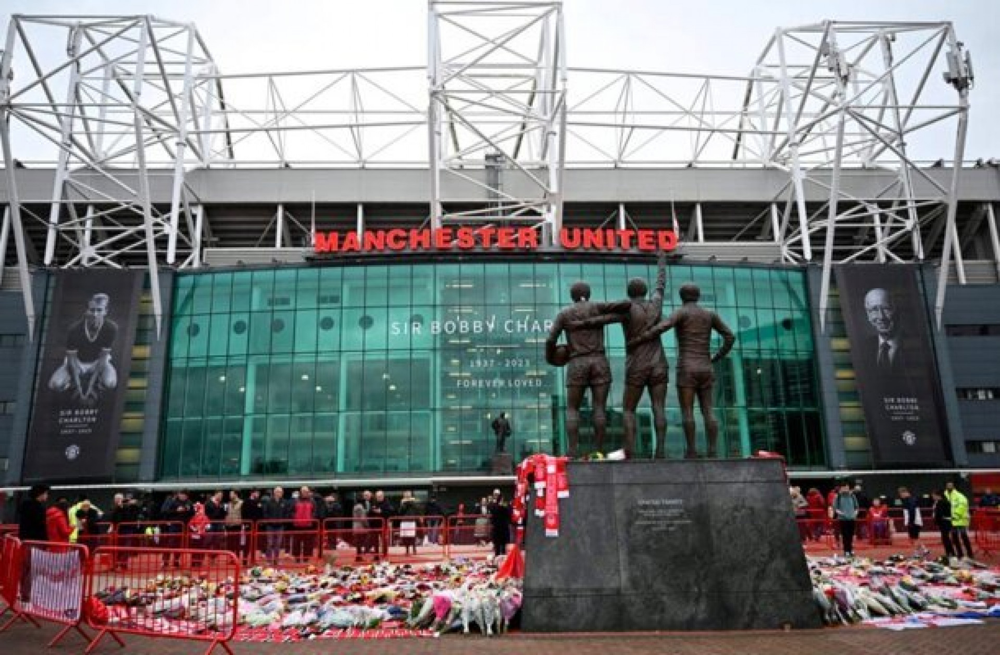
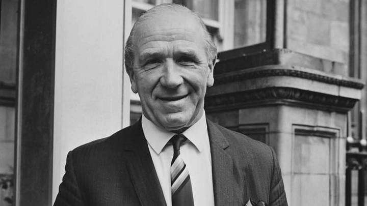

About the Club
Origins: Newton Heath (1878)
Manchester United Football Club was founded in 1878 as Newton Heath LYR Football Club by workers of the Lancashire and Yorkshire Railway depot at Newton Heath. The club entered the Football League in 1892 before being reformed as Manchester United in 1902, following serious financial difficulties.
The club found its first home at Bank Street in Clayton before moving to Old Trafford in 1910 — a ground that would go on to become one of the most iconic stadiums in world football, earning the nickname "The Theatre of Dreams", a phrase coined by Sir Bobby Charlton.
Early success came under Ernest Mangnall, who guided the club to its first two First Division titles in 1908 and 1911, and its first FA Cup in 1909.

The Busby Era (1945–1969)

Sir Matt Busby is widely regarded as the greatest manager in the club's history. Taking charge in 1945, he built three outstanding teams over more than two decades.
His first great side won the First Division in 1952. He then developed a remarkable group of young players known as the "Busby Babes" — but tragedy struck on 6 February 1958 when a plane crashed on the runway at Munich airport, killing eight United players and devastating the football world.
Busby rebuilt the club with incredible resilience. In 1968, just ten years after Munich, Manchester United became the first English club to win the European Cup, beating Benfica 4–1 at Wembley, with goals from Bobby Charlton, George Best and Brian Kidd.
The Ferguson Dynasty (1986–2013)
No manager in English football history matches the achievement of Sir Alex Ferguson, who transformed United into the dominant force in English and European football.
🏆 1993 — First League Title in 26 Years
Ferguson delivered United's first league championship since 1967, ending a 26-year wait and beginning an era of total dominance.
🏆 1999 — The Treble
The greatest season in the club's history. United won the Premier League, FA Cup, and Champions League — completing the Treble in the most dramatic fashion imaginable, scoring two injury-time goals against Bayern Munich.
🏆 2008 — Champions League Again
A second Champions League triumph under Ferguson, beating Chelsea on penalties in Moscow. Cristiano Ronaldo was named the best player in the world that year.
In total, Sir Alex Ferguson won 13 Premier League titles, 5 FA Cups, 4 League Cups, and 2 Champions League trophies before retiring in May 2013 — leaving a legacy that may never be matched.
Major Achievements
| Competition | Titles Won | Most Recent | Notable Season |
|---|---|---|---|
| Premier League / First Division | 20 | 2012–13 | 1998–99 (Treble season) |
| FA Cup | 12 | 2015–16 | 1999 (part of the Treble) |
| League Cup (EFL Cup) | 6 | 2022–23 | 2009–10 |
| UEFA Champions League | 3 | 2007–08 | 1998–99 (Treble season) |
| UEFA Europa League | 1 | 2016–17 | 2016–17 (Mourinho's first season) |
| UEFA Cup Winners' Cup | 1 | 1990–91 | 1990–91 |
| UEFA Super Cup | 1 | 1991 | 1991 |
| FIFA Club World Cup | 1 | 2008 | 2008 |
| FA Community Shield | 21 | 2016 | Multiple times |